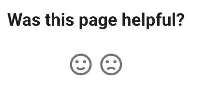

Tutorial
Why Student Feedback Matters
Every educator knows that teaching is a two-way conversation. The best textbooks evolve based on how students interact with them, where they struggle, and what resonates. Yet traditional textbooks offer no mechanism for this feedback loop. Students read, sometimes struggle, and move on. Authors never learn which explanations clicked and which fell flat.
Intelligent textbooks change this paradigm.
By integrating a comment system directly into each page, you create a continuous feedback channel between students and content creators. Students can:
- Ask clarifying questions right where confusion occurs
- Share insights that help fellow learners
- Report errors, typos, or outdated information
- Suggest improvements based on their learning experience
This feedback is invaluable. A single confused comment often reveals that dozens of other students had the same question but didn't speak up. Patterns in feedback across chapters reveal which concepts need better scaffolding or more examples.
MkDocs Material Feedback Widget
MkDocs Material includes a built-in feedback widget that can be added to the footer of every page. This is separate from Giscus comments and sends data to Google Analytics rather than GitHub Discussions.
The following text and icons appear at the bottom of every page:

What Data Is Collected
When a user clicks a feedback icon, Material for MkDocs sends an event to Google Analytics containing:
- Page URL - Which page received feedback
- Page Title - The title of the page
- Rating Value - The numeric value (e.g.,
1for positive,0for negative)
This is lightweight, anonymous feedback. No personal information is collected, and users don't need to log in.
Configuration in mkdocs.yml
The feedback widget is configured under extra.analytics.feedback in your mkdocs.yml file:
1 2 3 4 5 6 7 8 9 10 11 12 13 14 15 16 17 18 19 20 | |
Configuration Options Explained
| Option | Description |
|---|---|
provider |
Analytics provider (google for Google Analytics) |
property |
Your Google Analytics 4 measurement ID (starts with G-) |
feedback.title |
The question displayed above the icons |
ratings |
Array of feedback options (typically 2-4 choices) |
ratings[].icon |
Material icon name (see Material Icons) |
ratings[].name |
Tooltip text shown on hover |
ratings[].data |
Numeric value sent to Google Analytics |
ratings[].note |
Message displayed after user clicks |
Viewing Feedback in Google Analytics
To view feedback data in Google Analytics 4:
- Go to analytics.google.com
- Select your property
- Navigate to Reports → Engagement → Events
- Look for the
feedbackevent - Click to see breakdown by page and rating value
You can also create custom reports or explorations to analyze:
- Pages with the most negative feedback
- Feedback trends over time
- Comparison of positive vs. negative ratings by section
Feedback Widget vs. Giscus Comments
| Feature | Feedback Widget | Giscus Comments |
|---|---|---|
| Data Storage | Google Analytics | GitHub Discussions |
| User Effort | One click | Write a comment |
| Authentication | None required | GitHub login |
| Detail Level | Binary (good/bad) | Full text comments |
| Response Time | Instant | Requires reading |
| Best For | Quick sentiment | Detailed feedback |
How They Work Together
In this template, we combine both systems:
- User sees feedback icons at the bottom of the page
- User clicks an icon (positive or negative)
- Rating is sent to Google Analytics for aggregate tracking
- Giscus comment form appears inviting detailed feedback
- User can optionally write a comment stored in GitHub Discussions
This two-step approach captures both:
- Quantitative data - How many people found each page helpful (Analytics)
- Qualitative data - Why they felt that way (Discussions)
Why GitHub Discussions?
There are many comment systems available, but GitHub Discussions offers unique advantages for educational content:
Persistence and Ownership
Unlike third-party comment platforms that can disappear or change terms, GitHub Discussions are stored in your repository. You own the data. Comments persist as long as your repository exists, creating a permanent knowledge base alongside your content.
Quality Through Authentication
GitHub authentication means every commenter has a verified identity. This dramatically reduces spam and encourages thoughtful contributions. Students are more likely to ask genuine questions when their name is attached.
Threading and Organization
GitHub Discussions support threaded conversations, reactions, and marking answers as solutions. Complex discussions stay organized, and future students can quickly find resolved questions.
Integration with Your Workflow
Since discussions live in your repository, they integrate naturally with your development workflow. You can reference discussions in commits, link to them from issue trackers, and include feedback in your content planning.
Free and Open Source Friendly
For open educational resources, GitHub Discussions is free and aligns with open source values. There are no premium tiers or feature limitations based on payment.
The Power of the Discussions API
One of the most powerful features of GitHub Discussions is the GraphQL API. This enables you to programmatically analyze feedback across your entire textbook.
Chapter-by-Chapter Analysis
Since Giscus creates one discussion per page (using the pathname mapping), you can query discussions by URL pattern to analyze feedback for specific chapters:
1 2 3 4 5 6 7 8 9 10 11 12 13 14 15 16 17 | |
Metrics You Can Track
With the API, you can build reports that answer questions like:
- Which chapters generate the most discussion?
- Which pages have unanswered questions?
- What's the average response time to student questions?
- Which topics have the most positive/negative reactions?
- How has engagement changed over the semester?
Automated Feedback Reports
You can create scripts that run weekly or monthly to generate feedback reports. These reports can:
- Identify pages needing attention (high comment count, unresolved questions)
- Track engagement trends over time
- Export feedback for inclusion in course improvement documents
- Alert maintainers to new questions requiring response
Example: Finding Pages with Most Comments
1 2 3 4 5 6 7 8 9 10 11 12 13 14 | |
This returns the 10 pages with the most comments, helping you prioritize which content needs review.
What You'll Learn
This tutorial walks you through setting up Giscus comments for your MkDocs Material site:
-
Getting Started - Step-by-step setup instructions from enabling GitHub Discussions to deploying your site with working comments
-
Debugging - Troubleshooting guide for common issues with console commands and diagnostic techniques
By the end, you'll have a fully functional comment system that:
- Appears when users click feedback icons
- Syncs with your site's light/dark theme
- Stores all comments in your GitHub repository
- Provides API access for analytics and reporting
The Feedback-Driven Textbook
When you combine persistent comments with API-driven analytics, you create a feedback-driven textbook. Content improves iteratively based on real student experiences. Confusing sections get rewritten. Popular topics get expanded. The textbook becomes a living document that gets better with every cohort of students.
This is the promise of intelligent textbooks: content that learns from its readers.
Let's get started.